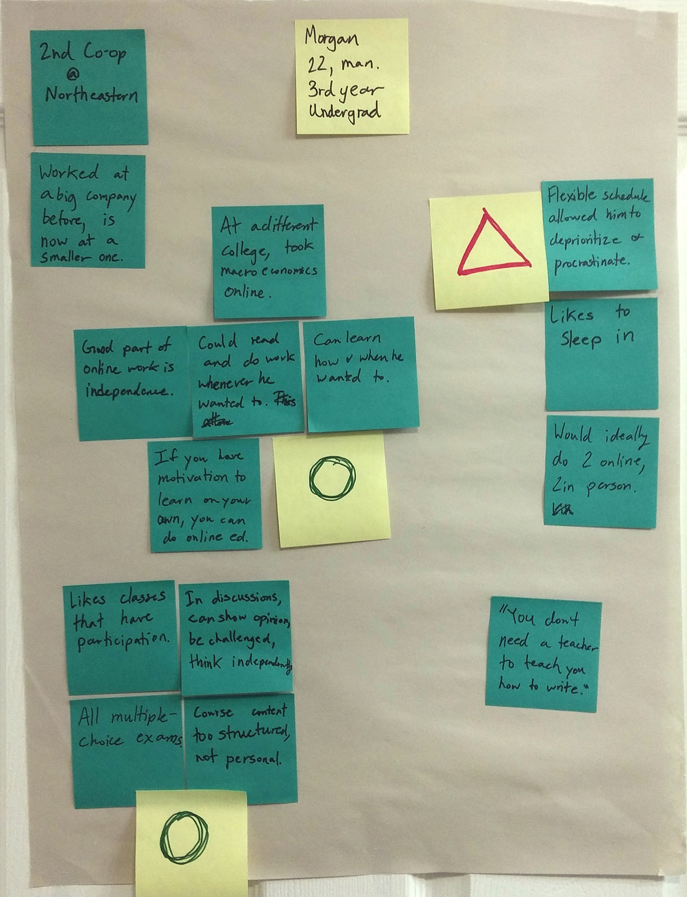

Online Education User Research
Question: How does online education affect motivation?

Authess
When I lived in Cambridge, I conducted user research for Authess, an early-stage Ed-Tech startup. The goal of this research was to clarify contradictions in the needs of different users and articulate the potential value proposition of Authess.
User Research
Interviewing Users
I interviewed 8 students who had taken courses with an online component in the past year. In these interviews I asked them why they took the online courses and how the online platform affected their learning.
Creating User Portraits
I summarized notes from interviews on post-its, and clustered them to bring out patterns.
Morgan
Lily

Rusty

Personas
As in other education contexts, intrinsic motivation was associated with positive experiences. On the other hand, extrinsic motivation was associated with anxiety and cheating. This difference in motivation seemed to have an amplified effect in online education.
Graded Grant
Graded Grant focuses on grades because grades are how he has been told he will get ahead in life.

Grant's Pain Points
- The flexible schedule of online courses allows Grant to procrastinate, leading to a buildup of work at the end of the semester.
- Grant is frustrated when other students cheat, which is often easier with online courses.
Curious Curry
Curious Curry focuses on understanding concepts and how they may help her solve problems.

Curry's Pain Points
- Curry doesn't like how online courses only mark answers on assignments as right or wrong without an explanation. Having more thorough answers would help her to figure out what she misunderstood.
- Curry learns better when she engages in conversations with other students, and that can be lacking in online courses that don't have forums or collaboration built in.
Validation of Authess' Value Proposition
Value Proposition for Grant
Answers in Authess are based on problem-solving approaches, so Grant can still get credit for what steps he followed correctly. Because questions are not limited to multiple-choice, tests are more difficult to cheat on.
Value Proposition for Curry
Authess' questions are based on ways of thinking and concepts, so Authess’ approach to assessment aligns with Curry’s learning goals. Curry could be an early-adopter for this reason and might be worth focusing on.
Impact of Research on Authess
Before the research, it seemed that the users contradicted each other. However, interviewing and segmenting users through personas helped resolve those contradictions. This was valuable for Authess as they developed their MVP and completed a round of funding.
Making Cooking More Sustainable
Question: How can we redesign cooking to reduce impact?

About the Project
My team and I looked at dinner preparation because we were interested in ways that we could use technology to make everyday actions more sustainable. After calculating the impact of dinner preparation, we found that the embedded cost of ingredients was the greatest source of impact. With this in mind, we designed an app called "ReMixipe" that helps people “remix” their recipes.
My Role
On this project, I was responsible for coordinating the logistics: acquiring a stovetop, taking measurements, and scheduling interviews. I also assisted with analyzing interview results.
Pain Points
We started this process by interviewing people and developed two personas: Get 'Er Done Grant and Passionate Patricia.

- Grant values cost, efficiency and convenience.
- Patricia values quality, flavor and nutrition.
Comparing the Impact of Food and the Stovetop.
Cost to Produce, Use, and Dispose
To analyze the environmental impact of a stove, we ran a Life-Cycle Assessment on it. This meant looking at what a stovetop is made of and how much of each material. We then multiplied the total amount of each material by the environmental cost of that material(Ide-Mat 2012). To get the energy cost of cooking a meal, we measure the energy draw on the stove while using it.
With these combined measurements, we had an estimation of the cost to produce, use, and dispose of the stove top.
But then we ran a life-cycle assessment on an "average meal," which included meat, starch, and vegetables. We learned that the majority of impact of a meal comes from the food and not the stove.

This suggested a new goal: rather than redesign a new stove, we should redesign how people decide what to cook.
Changing the Decision-Making Process
So, how do people decide what to cook? People we interviewed already have between 10 and 20 recipes that they cycle through. People cook what they cook because they know those recipes and feel comfortable with them.
We envisioned an app that helps people cook more sustainable meals by modifying the recipes. This is a viable solution because it does not require a significant change in behavior, and it is in line with our personas' values. Grant likes to save money, and Patricia cares about the health of her children.
But What About Flavor?
The app that we propose does more than substitute. It takes in recipes and creates a profile of the flavor compounds in the food. When ingredients are removed, new ingredients are substituted to achieve a similar alternative. Over time, the app will collect feedback from the user to develop an understanding of the user's preferences. Like a good DJ, it feels the crowd and plays to the taste of its audience.
How to Use ReMixipe
- Input a recipe: verbally, via web, photo, or typing.
- Receive a remixed recipe
- Cook with the remixed recipe
Making it Into an App.

After this class ended, I developed the idea further on my own. My process can be found here.